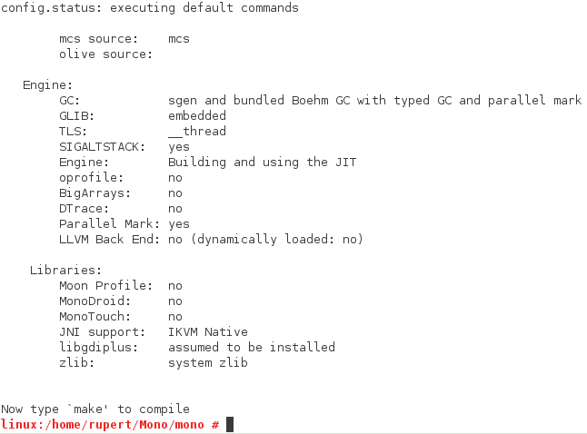
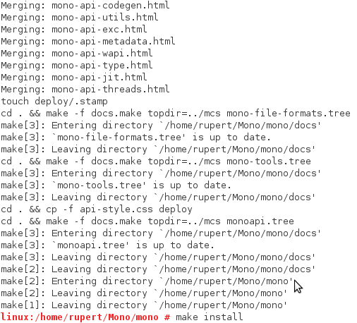
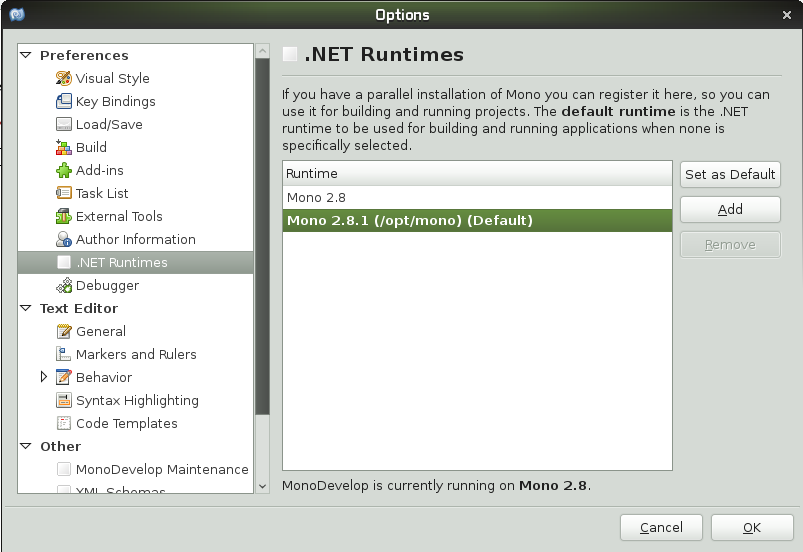

November 9, 2010
How to compile Mono from its source code? I run a Windows machine, so the first step was to install an openSUSE virtual machine.
1. Trigger the autogen.h file with the necessary parameters:. The "prefix" argument indicates the directory where the compiled project will be dumped:
./autogen.sh --with-large-heap=yes --with-profil4=yes --prefix=/opt/mono -with-sgen=yes
2. Once the files are ready, you will be prompted to type “make”:
3. And finally type "make install" to export all files to the output directory:
To use your compiled source from MonoDevelop, add a new default .NET runtime for your project:
